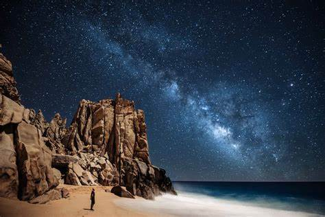
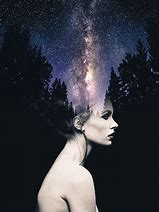
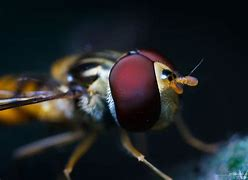

Discover innovative photography techniques that will take your skills to the next level. Learn how to capture stunning photos with unique perspectives and creative compositions.
Long Exposure Photography:
Long exposure photography is a technique that involves using a slow shutter speed to capture the movement of light over an extended period. By keeping the shutter open for a longer duration, you can create captivating light trails, silky smooth waterfalls, and streaking clouds.
Double Exposure Photography:
Double exposure photography is a creative technique where two or more images are combined into a single frame. This allows you to blend different elements, create multiple exposures, and produce unique and artistic compositions.
Macro Photography:
Macro photography focuses on capturing extreme close-up shots of small subjects, revealing intricate details that are often unseen by the naked eye. This technique allows you to explore the miniature world and showcase the beauty and complexity of tiny objects.
